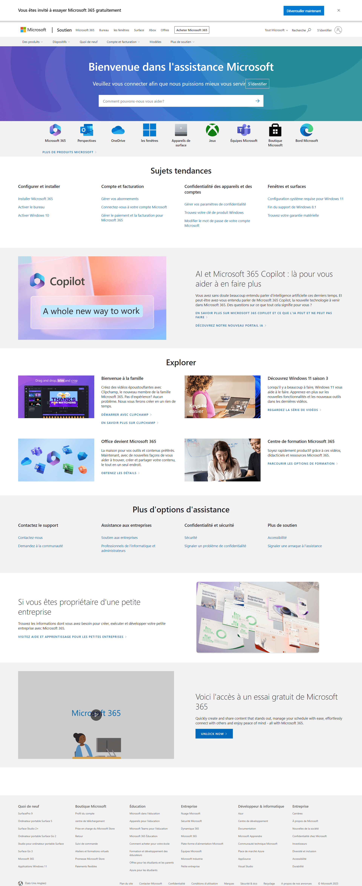

 Windows Defender
Windows Defender
Alerte Windows Defender : virus Zeus détecté sur votre ordinateur !!
-

-
! LE NAVIGATEUR EST INFECTÉ !
ATTENTION! VIRUS DETECTES !
n544a.watchvideo.cc
Mettre à jour Windows Defender
Mise à jour importante de Windows Defender disponible. Cliquez sur "Installer" pour continuer.
-
-
Programme
Éditeur vérifié
Mesures nécessaires
-
windows.exe
Microsoft
Cliquez sur "Installer", puis "Installer" dans Windows Defender continue
Code d'erreur :- 0x80508027
Cette application pourrait endommager votre appareil. Apprendre
-
L'équipe Windows Defender a été informée de ce problème.
Veuillez réessayer plus tard. Code d'erreur : - 0x80508007
Contactez l'assistance Windows Defender :
01 00 00 00 00 (Sécurité sans frais)
×
ERR_MP_BAD_INPUT_DATA
SmartScreen pour Windows Defender est désactivé. Votre appareil peut être vulnérable.
Code d'erreur : - 0x8050800CERR_MP_BAD_INPUT_DATA
×
ERR_MP_BAD_CONFIGURATION
La cause principale de cette erreur pourrait être une erreur de configuration du moteur.
Code d'erreur :- 0x80508020ERR_MP_BAD_CONFIGURATION
 Microsoft Windows Defender dit...
Microsoft Windows Defender dit...